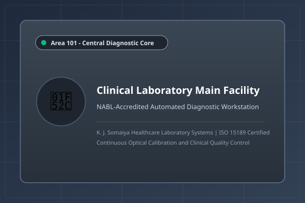

Laboratory Infrastructure Gallery
Photographs of diagnostic infrastructure at Somaiya Clinical Diagnostic Laboratory. Click any image to view full image details:

Central diagnostic hall with automated testing equipment.

Sterile phlebotomy room for outpatient blood drawing.

Optical strip reader and automated biochemistry analyzer.

Centrifugation bay and barcoded sample accessioning desk.
Infrastructure Specifications
| Facility Section | Equipment Installed | Biosafety Level | Operational Status |
|---|---|---|---|
| Clinical Laboratory | Colorimeter Unit (KJS-HC-03), Clinical Chemistry Analyzer | BSL-2 | Active (24x7) |
| Blood Collection Room | Phlebotomy Chairs, BD Vacutainer System, Cold Storage | BSL-1 | Active (07:00 - 20:00) |
| Automated Analyzer | Reflectance Spectrophotometer, 5-Part Cell Counter | BSL-2 | Active |
| Sample Processing Area | Refrigerated Centrifuge, Barcode Scanner, Vortex Mixer | BSL-2 | Active |